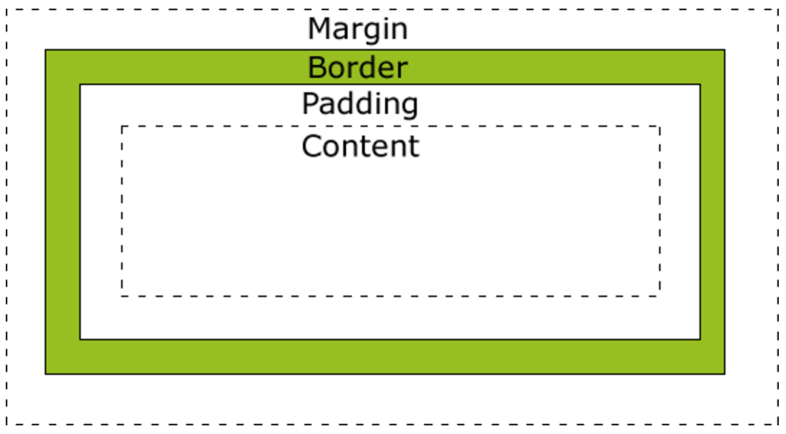
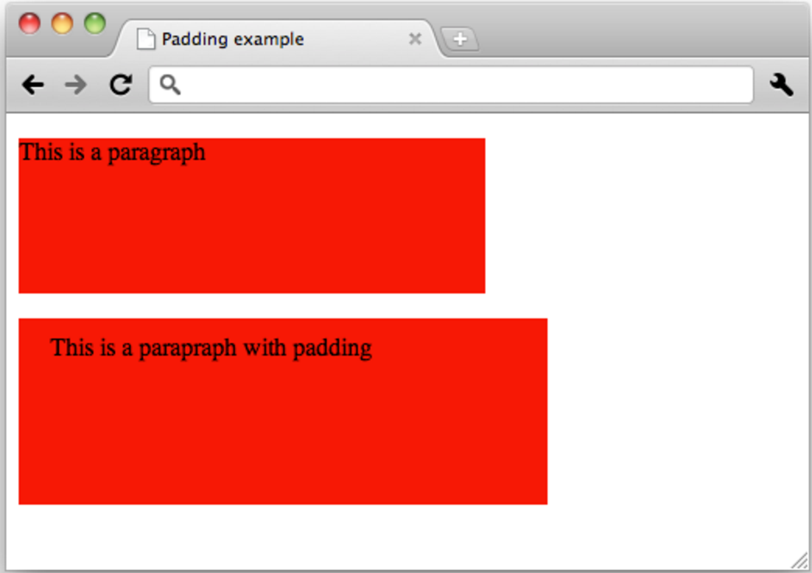

Know Your Boundaries
Using CSS, a developer may adjust the margin, border, or padding of various HTML elements. In today's piece, I am going to discuss these properties and their differences. Hold on to your breaches!
The following image is from www.w3schools.com/css/css_boxmodel.asp 
Each HTML element can be thought of as a box with three potential layers around the content. The outermost layer is the margin. The margin is transparent, and it is set to determine how much space exists between the edge of the element and any other nearby elements. Some HTML elements, such as headings, have pre-set margins, but they can all be overwritten (or set to 0) within a CSS stylesheet. There are a few different ways to specify margins.
In the above code, the margin is set to 10 pixels for all for sides of the element. To adjust individual margins, the following technique is used:
The above can be shortened to:
An important feature of vertical margins is that if there is no other content, border, or padding between two elements, their vertical margins will collapse to the greater of the two specified margins. For example, if one element has a bottom margin of 10 pixels, and an element right below it has a top margin of 30 pixels, the margin between them will be 30 pixels, not 40. Intuitively, if the top element calls for 10 vertical pixels of space between it and the next element, there is no need to add 10 pixels of space when the element below is already giving it 30 pixels of vertical space.
Alright! Time to peel a layer off of our HTML element onion. Next up: Borders.
The border goes around the padding and content, and inside the space designated by the margin. The outermost edge of the border is where the margin begins. The border may be thin or thick, solid or dashed, embedded, ridged, or one of a number of other descriptors with various properties. It is not a required property: a border may be hidden, set to none, or not described at all, which will have the same result.A border may be specified as follows:
or
Each side of the border may also be set to a different color, for example, by using the property keys border-top-color: or border-right-color , for example. Borders may also be rounded or made into elliptical shapes, and it can even be made up of slices of an image! There are many ways to specify exactly how a border should look; for more details, the internet is your friend!
Last but not least, the padding is our final layer around the content of our HTML element. It is another transparent layer, similar to the margin. The padding sets the amount of space between the content and the border. The CSS looks to similar to margin:Which can again be shortened to:
For a quick visual, here is an example from www.w3.org/wiki/CSS/Training/padding_and_margin
Okay! I think you have read enough about margin, border, and padding for one day. Hopefully you now have a good foundation for managing the edges of all of your HTML elements! Until next time...
Comments?